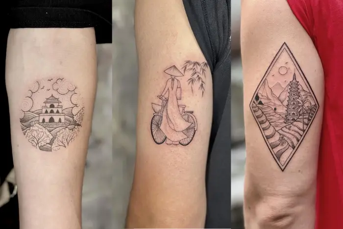

Hanoi does not shout. It hums. Motorbikes whisper past, a street cook fans charcoal, and a temple bell rings behind a tangle of power lines. This is a city where a thousand years of history sit beside the morning coffee.
If you only have a few days, this guide will help. Here are the top places to visit in Hanoi, and one idea for taking a piece of the city home with you.
Where Hanoi’s Story Begins
1. Hoan Kiem Lake: The Heart of the City

Locals call it the “Lake of the Returned Sword.” Legend says Emperor Le Thai To gave a magic sword back to a golden turtle here. Come at sunrise and you will see people practicing tai chi, jogging and sipping tea by the water.
Don’t miss Ngoc Son Temple, The Huc Bridge and the little Turtle Tower.
Tattoo idea: a tiny fine-line turtle. It is a symbol of longevity and wisdom, and it is a favorite for first-time tattoo clients.
2. The Old Quarter: One Night, Endless Flavors

If you only have one evening, spend it here. Narrow streets, named after the crafts once sold on them, wind around you. Silver, silk, paper, tin: each lane has its own history. Today you will find souvenirs, coffee shops and some of the best street food in Southeast Asia.
Walk slowly. Sit on a plastic stool. Say yes to the bowl of noodles.
3. Temple of Literature: Vietnam’s First University

Built around 1070 and linked to Vietnam’s first national university (founded in 1076), this peaceful complex is full of old trees, stone steps and courtyards. Students still visit before exams to ask for good luck.
Look for Khue Van Cac, a graceful pavilion built in 1805 and named after a star. Its name means “the beauty of the Khue star.”
Tattoo idea: a small star or minimalist pavilion outline, a symbol of learning and hope.
4. One Pillar Pagoda: A Lotus in Stone

Originally built in 1049, this tiny temple stands on a single pillar and is shaped like a lotus rising from a pond. It is small, but the symbolism is big: purity, rebirth and blessings.
Tattoo idea: a lotus. It is one of the most meaningful Vietnamese motifs, and it looks beautiful in fine-line or blackwork.
5. Thang Long Imperial Citadel

Walk through the ancient gates and step into the royal past of Vietnam. The citadel is a quiet, shady place to understand how Hanoi became the capital more than a thousand years ago. It is an easy, rewarding visit for history lovers.
Colonial Charm and Living Traditions
6. Hanoi Opera House and St. Joseph’s Cathedral

These two landmarks show the city’s French-era side. The Opera House, opened in 1911, was inspired by the Paris Opera. The Cathedral, with its Gothic towers, is a favorite photo spot, and the little streets around it are packed with cafés. Try the famous lemon tea while you watch the crowds.
7. Thang Long Water Puppet Theatre

Wooden puppets dance on water while a live band plays traditional music. The show tells old village stories of farming, fishing and folklore. It is short, charming and easy to enjoy even if you don’t speak Vietnamese. The theatre is right beside Hoan Kiem Lake, so it fits easily into your walking route.
Tattoo idea: a simple dragon or fish motif inspired by water-puppet art.
8. Long Bien Bridge: Hanoi’s Iron Veteran

Built between 1898 and 1902, this steel bridge crosses the Red River and has watched the city change for over a century. Walk or ride across at golden hour for dramatic views and real local atmosphere.
Tattoo idea: a delicate line drawing of the bridge’s arches, a perfect “I was there” mark for travelers.
Craft Villages Near the City
9. Bat Trang Ceramic Village

Just outside Hanoi, this village has made pottery for over 500 years. You can watch artisans shape clay and even try the wheel yourself. It is one of the best ways to see Vietnamese craftsmanship up close.
Tattoo idea: the classic blue-and-white ceramic pattern, adapted into a clean linework design.
10. Van Phuc Silk Village

This old village is known for its centuries-old silk weaving. Along the lanes you can see looms, shops and the whole process of making silk by hand. It is a lovely half-day trip and a great place to buy a scarf.
Quick Tips for Visitors
- Best time: October to April has milder weather, and autumn is especially beautiful.
- Dress modestly for temples and pagodas.
- Start early. Mornings are cooler and quieter.
- Walk the Old Quarter instead of taking a taxi. Getting lost is part of the fun.
Keep Your Hanoi Memories Forever: A Tattoo from Mr Tattoo Hanoi Studio

Postcards fade and photos get buried on your phone. A tattoo stays with you.
Right in the heart of Hanoi’s Old Quarter, Mr Tattoo Hanoi Studio helps travelers turn their journey into a small, meaningful piece of art. Maybe it’s the turtle from Hoan Kiem, a lotus from the One Pillar Pagoda, or the simple arch of Long Bien Bridge. Our artists design every piece as a one-of-a-kind custom tattoo, not a copy from a catalog.
What We Offer
- Custom, original designs made just for you
- Traditional Vietnamese motifs and East Asian-inspired art
- Fine-line and Blackwork styles
- Travel memory tattoos, small, quick and meaningful
Small Tattoo, Big Memory
You don’t need a large piece to tell a story. Small travel tattoos start from just $10, which makes them an easy and affordable souvenir. Most small designs take under an hour, so you can fit one between a morning at the temple and an evening of street food.
Ready to Book?
Tell us which place touched you most in Hanoi, and we will help you design something personal.
- WhatsApp / Hotline: +84 377 616 886
- Website: mrtattoo.vn
- Contact page: mrtattoo.vn/contact/
Walk the lake, taste the street food, listen to the city. Then take a little piece of Hanoi home on your skin.